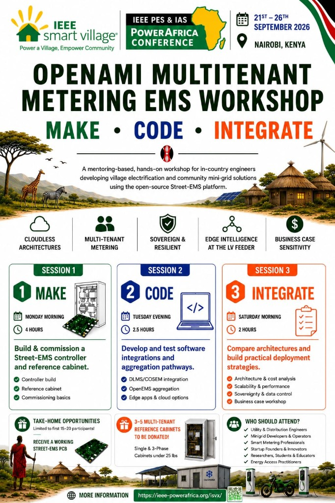

MAKE · CODE · INTEGRATE · IEEE PES & IAS Power Africa Conference · Nairobi, Kenya · 21–26 Sep 2026 · Glenn Algie · Mike Wilson · Register ↗
← Back to In-Person Events · Home
Build a Street-EMS controller on MeshEMS v2.0, integrate it into a three-phase reference cabinet, run backend integration labs, and draft a decision matrix for aggregation trade-offs.
Register via ISV @ PowerAfrica ↗ — conference day rate for the session you attend (Mon · Tue · Sat). No separate workshop fee.

Mentoring-based, hands-on workshop for in-country engineers developing village electrification and community mini-grid solutions using the open-source Street-EMS platform. Focus: cloudless architectures, multi-tenant metering, sovereign & resilient systems, edge intelligence at the LV feeder, and business-case sensitivity.
Beyond cloud-centric hackathons, this IEEE ISV track pairs hands-on engineering with business-case sensitivity — in-country engineers on village electrification and community minigrids compare aggregation paths (table below) and leave with a decision matrix scoped to deploy, operate, and sustain solutions locally.
| When | Duration | Theme | Notes |
|---|---|---|---|
| Monday morning (pre-session) | 30 min | — | Warren Scott, SteamaCo — commercial aggregation context |
| Monday morning | 4 hr | MAKE | Street-EMS controller build · 3φ reference cabinet (DIN rail, contactor, multi-tenant metering variants) |
| Tuesday evening | 2.5 hr | CODE | DLMS/COSEM integration · OpenEMS aggregation · edge apps & cloud options · Sandra / 10 Power video TBD |
| Saturday morning | 2 hr | INTEGRATE | Decision matrix workshop — cost, scalability, sovereignty, comms, lifecycle · end-to-end wrap |
One evolution of Street-EMS: embedded LV feeder distributed intelligence — measure at feeder, branch, and customer; policy-based session admission; transmit only actionable telemetry (not archive dumps). Shifts the LV feeder from “last kilometre” to the first kilometre of community-owned electrification. Ties to OpenAMI and OBIS · VMRS northbound.
AfCFTA opportunities and Harmonized System (HS) codes for module/PCB import, local assembly, test, programming, repair, and export — briefing for in-country startups.
| Path | Role | Workshop use |
|---|---|---|
| DLMS / COSEM | Southbound meter protocol | Vendor meter integration at the cabinet edge |
| EnAccess · OpenAMI | Multi-tenant REST / operator backend | Cloud aggregation · MPM · field-validated open stack |
| OpenEMS | Open aggregation & EMS | Rapidly maturing framework for edge orchestration and backend options |
| Cloudless / sovereign | LV feeder intelligence | Session admission · P2P control plane · actionable telemetry only · no mandatory cloud |
Saturday INTEGRATE session — participants draft a worksheet comparing paths on deployment cost, scalability, sovereignty, comms requirements, and lifecycle sustainability (repair, HS import/export, local test).
| Who | When | Notes |
|---|---|---|
| Warren Scott, SteamaCo | Monday morning · 30 min pre-session | Before workshop starts |
| Sandra, 10 Power (Haiti) | Tuesday evening · CODE | 5–10 min video — native projects in the Americas; women-owned; creative business cases |
| EnAccess | MAKE · CODE · INTEGRATE | OpenAMI on site; attending workshop |
| Aaron, NearlyFree Energy | Workshop sessions | Interested in attending |
| AMDA | Outreach pending | pitch PDF · our-team · #14 |
Workshop kits: NESL 865B (MeshEMS v2.0). v1 at Power Africa 2025 and Oakland hackathon 2025. Diagram, BOM, firmware: MeshEMS board hub.
Internal organizer list — budget, room layout, shipping, materials.
| Task | Issue | Notes |
|---|---|---|
| Reach out to AMDA | #14 | our-team · OBIS codes · open stack |
See follow-up summary at the top of this page. Full board in Knowledge Base · Tasks or GitHub Issues ↗.